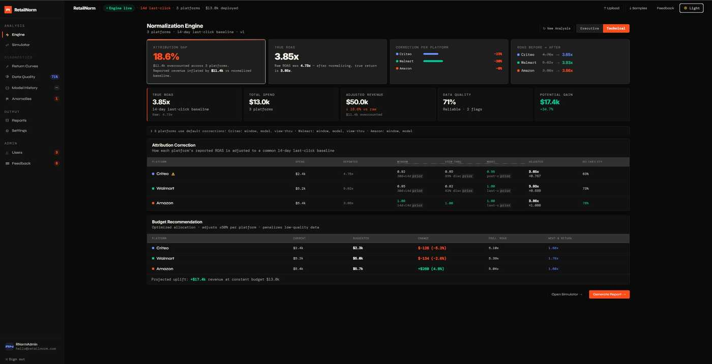
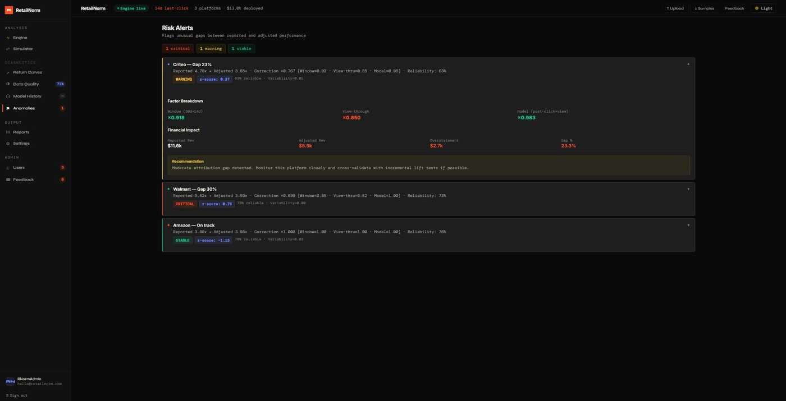
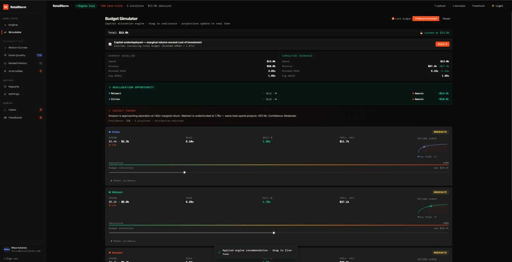
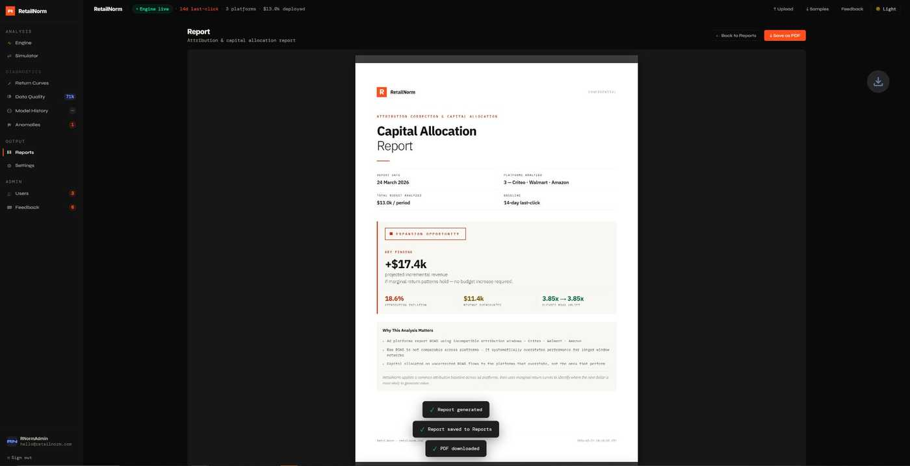

Three platforms measure the same dollar three different ways. I built the common ruler.
RetailNorm normalizes cross-platform retail media data to one declared attribution standard, so mid-size agencies can compare what platforms designed to be incomparable. Founder-level ownership: research, validation, service design, interface, growth. Solo, AI augmented build: validated concept to paying-user product in weeks.

Every platform grades its own homework. Agencies compare the grades.
Amazon Ads reports ROAS on a 14-day last-click window. Walmart Connect uses 30-day multi-touch. Criteo uses 7-day first-click. Each number is internally correct and externally meaningless: the measurement system changes with the party being measured, and the party being measured chose the system.
Mid-size agencies sit downstream of this with no tooling. Enterprise suites that solve it start at $3–10K/month; their real alternative is a planner, Excel, and a personal macro nobody else trusts. Budget decisions worth hundreds of thousands of dollars flow through that macro every Monday.
Scope: Full product (research to production)
Users: Mid-size media agencies
Work: Research, service design, IA, interface, growth, AI execution
The person downstream of all this spends half of Monday in Excel.
Before designing anything I mapped who carries the problem. It is a senior media planner at a mid-size agency: a handful of clients, three platforms, one report a week for each, and a personal macro nobody else trusts.
- Company
- Spark Commerce, 22 people
- Manages
- 6 retail media clients
- Platforms
- Amazon Ads, Walmart, Criteo
- Reports
- Weekly, to client stakeholders
- Pain
- 3+ hours a week normalizing in Excel
- Goal
- Accurate cross-platform ROAS, fast
- Budget
- Under $500 a month for tools
- Compare ROAS across 3 platforms for each client
- Produce the weekly performance report in under 30 minutes
- Recommend budget reallocation with data behind it
- Feel confident presenting numbers to senior clients
- Lose the Sunday night anxiety about Monday reports
- Look like a strategic partner, not a spreadsheet jockey
- Impress clients with professional, branded reports
- Set the agency apart through methodology
- Build a personal reputation as the retail media expert
Value flow
Runs on
A measurement problem, misdiagnosed as a workflow problem.
Everyone downstream treated this as an efficiency problem: planners just needed to be faster in Excel. That misdiagnosis is why it persisted. You cannot spreadsheet your way out of three incompatible attribution systems; the comparison itself is invalid before the first formula runs.
Framing it as a measurement-standards problem changed what needed to be built. Not a faster report generator: a normalization engine with one declared standard, and enough transparency that agencies would trust numbers that are consistently lower than the ones platforms hand them.
Defensible moat, and it is not the algorithm
| Dimension | Manual Excel | Skai / Pacvue | Mimbi | RetailNorm |
|---|---|---|---|---|
| Time to first insight | 2 to 4 hours | 1 to 2 weeks onboarding | Days setup required | Under 5 minutes upload and go |
| Setup complexity | None just Excel | Sales call plus implementation | API integration plus BI config | None drag and drop |
| Attribution handling | Manual formulas error prone | Platform native not normalized | Aggregation only no normalization | Auto normalized one declared standard |
| Output quality | Custom time intensive | Dashboard only not exportable | Raw data needs a BI tool | Client ready PDF one click |
| Price point | Free time is the cost | $3K to 10K/mo annual contract | $1K to 5K/mo custom pricing | $200 to 600/mo no contract |
| Learning curve | Low familiar tool | High complex UI | High technical users | Minimal 3 step flow |
| Cross-platform comparison | Possible manual and slow | Within platform ecosystem only | Data layer only no analysis | Core feature built for this |
What the audit changed
Agencies don’t buy tools. They buy deliverables.
Concierge validation, manually delivering normalized reports before any product existed, surfaced it: agencies never asked about the dashboard. They asked when the next PDF was coming. The report is the unit of value; the interface is how the report gets made. Starting with the dashboard would have meant building the wrong product with full confidence.
The second insight is less comfortable: a normalizer that only ever outputs lower numbers is, commercially, a bad-news machine. It survives only if it can justify itself. That made explanation infrastructure, confidence scores, data flags and an auditable technical view, first-class product rather than documentation.
What I built, and the order I refused to change.
Four things made it into v1, each traced to a signal from the validation sprint. Together they turn a half day of spreadsheet work into three steps.
A normalization engine with one declared standard
Upload CSVs from any platform, get comparable ROAS in seconds, normalized to 7-day last-click: deliberately the strictest of the three. Every normalized number lands lower than what agencies are used to seeing. That is not a side effect to soften; the gap between reported and normalized is the product’s clearest proof of value, and explaining it is the strongest trust moment in the entire experience.
One engine, two cognitive loads
Directors and planners need the same truth at different depths. The executive view gives three numbers and one plain-language insight; the technical view exposes decay parameters, z-scores and corrections, auditable line by line. Same engine, same confidence score in both: trust is never view-dependent.
- 3 numbers, no jargon
- one plain-language insight
- the answer, not the math
- decay parameters per platform
- z-scores and applied corrections
- the math, auditable line by line
Uncertainty as a visible property
Every analysis carries its confidence and its flags: “71%, 2 flags.” The counterintuitive bet of the product, showing imperfection to build credibility, and the one users cite most. Polished certainty is what the platforms sell. This is the alternative.
The PDF as the retention mechanism
Agencies judge the product by the artifact that reaches their client. If it looks like an Excel export, they rebuild it in PowerPoint and the tool becomes a data source. The report template got institutional-grade typography and structure because report quality, not feature depth, is what brings an agency back next Monday.
Normalization engine. The attribution gap leads, then what each platform reported against what it becomes on one baseline.

Risk alerts. Every gap between reported and adjusted performance is flagged with its factor breakdown and reliability.

Budget simulator. Drag to reallocate and see projections update, with the confidence of the underlying data in view.

Client report. The artifact agencies come back for: generated, saved and downloaded in one action.
Color tokens
Typography
Confidence: 87% | Window: 7d
Component patterns
- Header: platform name and icon
- Metrics row: spend, revenue, ROAS
- Badge: attribution window
- Normalized against raw, side by side
- Column headers
- Sortable rows
- Best and worst performer highlighted
- Confidence dot per row
- Score from 0 to 100
- High, medium or low label
- Green above 80, amber above 60
- Tooltip with the factors
- PDF thumbnail
- Client name and agency branding
- Reporting period
- Export button
Principles
Deliberately simple. The architecture is the feature.
The constraint set was unusual and shaped everything: solo operator, no engineering team, mid-size customers priced out of enterprise tooling. Every architectural decision had to be maintainable by one person, which turned architecture into a design decision rather than an engineering detail.
Input
Frontend, on Cloudflare Pages
Backend, FastAPI on Render
Output
The same logic ran through every other call. Each one meant choosing between conventional wisdom and what the research showed.
| Decision | Chosen | Rejected | Why |
|---|---|---|---|
| Normalization baseline | 7-day last-click (strictest) | 14-day (Amazon default) | Strictest standard means every number drops, which forces the “why is this lower?” conversation: the moment the product earns trust or dies |
| Uncertainty display | Visible confidence scores (71%) | Hidden/clean 100% | Transparent imperfection more credible than polished certainty |
| Architecture | Single HTML file, no framework | React + microservices | One maintainer. A fix ships to production in 30 seconds. Every added layer is a liability I’d carry alone: architecture chosen as a design constraint, not a stack preference |
| Data input | CSV upload | API integrations | OAuth, credentials, rate limits would triple scope. CSV takes 15 seconds. APIs are v2 |
Comparability, priced for the agencies Excel was failing.
What RetailNorm is not: an attribution truth machine. No tool can recover what the platforms don’t expose. What it does is narrower and more defensible: one consistent ruler, applied identically to every platform, with its error bars showing. Agencies don’t need perfect attribution to allocate budget well. They need numbers that are wrong in the same way everywhere.